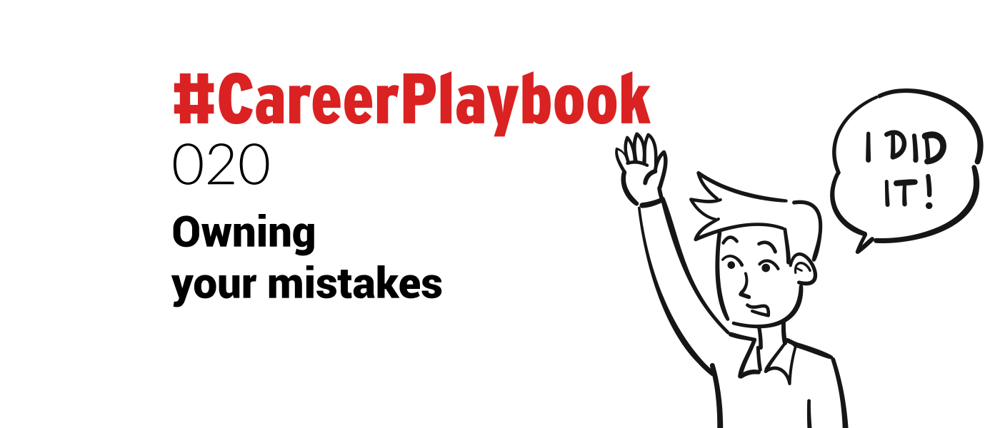

There is increasing pressure, in the workplace and in daily life to be nothing short of perfect.
The truth is that as humans we are far from achieving a state of perfection.
We get things wrong, make mistakes, misunderstand, and misinterpret.
The tendency for some can be to bury their head in the sand, sweep away the error, and hope it remains undiscovered, or point the finger at someone else.
While this is used sometimes as a coping mechanism it actually serves no purpose, either to the person that made the mistake, or anyone else involved.
Owning up to our mistakes can have a power all of its own.
Owning up to mistakes can rectify the issue faster than it being hidden, and can create a team spirit, an ‘all hands on deck’ spirit to get the problem corrected as quickly as possible.
Not to mention it can mitigate the array of related issues that may arise from not confessing in the first place.
In the workplace, it can inspire trust among employees and clients.
Seeing the leader or manager take full responsibility can inspire trust, foster an air of openness, and lead to more fulfilling collaborations.
In the words of Truman Capote - “Failure is the condiment that gives success its flavor.”
Many great successes have arisen from absolute failures -
- Walt Disney was fired from the Kansas City Star because the editor felt he ‘lacked imagination and had no good ideas’
- JK Rowling, the famous author of the Harry Potter series was a single mother living on welfare, rejected many times by publishers, before she hit the big time
- Oprah Winfrey was raised in poverty and fired from her first TV job as she was deemed 'unfit for television'
Considering the achievements these 3 people have subsequently made, we can deduce that they must have been able to accept that they made mistakes early on.
Being willing to acknowledge mistakes and keep pushing forward is where the real strength lies.
The ability to admit to your mistakes reduces the embarrassment about making them in the first place, and people respect it.
Colleagues will trust you and look to you for guidance if they know you are willing to openly and honestly admit to your errors.
No-one likes a leader that blindly insists he or she is perfect, it is not realistic, nor does it inspire faith or confidence.
If you make a mistake take the following steps to put it right.
- **Raise your hand quickly, own up****
- **Admit to the mistake and identify it****
- **Do some damage assessment****
- **Take full responsibility****
- **Don’t try and apportion blame to others****
- **Make a strategic plan of action to correct the error****
While this may not undo the damage it means that the problem can be addressed swiftly before causing a slew of related problem.
It gives you the opportunity to deflect and divert the issue before it gathers speed and becomes unstoppable.
Dealing with mistakes in this way will also give you the chance to assess and learn from the situation.
What went wrong? What could I have done better? What could I have done differently?
The next time you make a mistake, put up your hand without hesitation.
Trust me, there is more to be gained from it than lost.